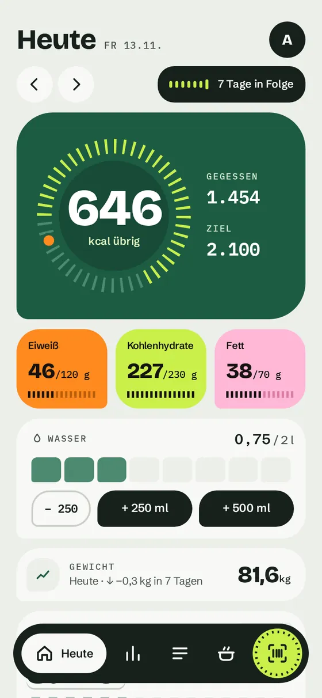
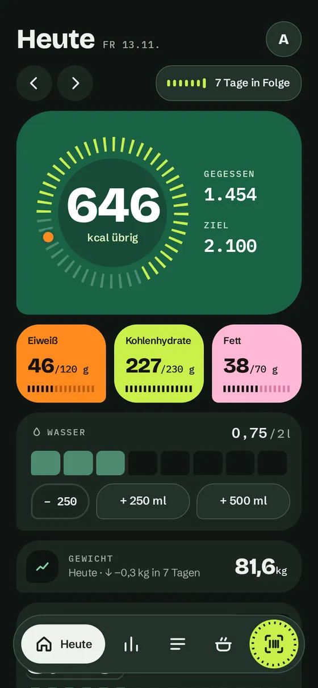
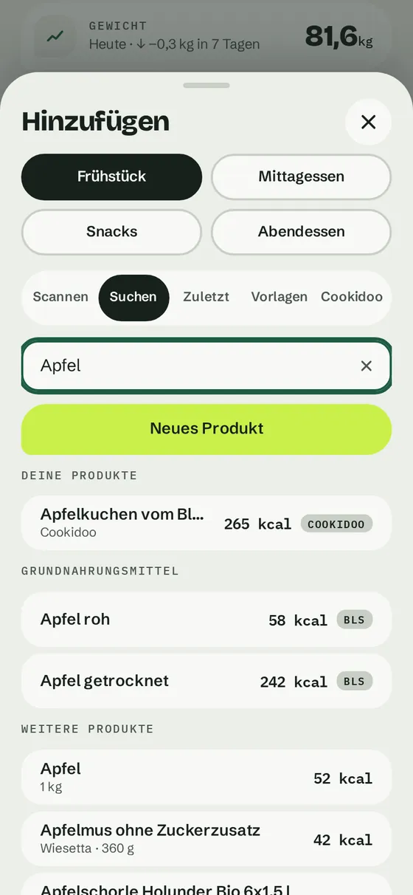
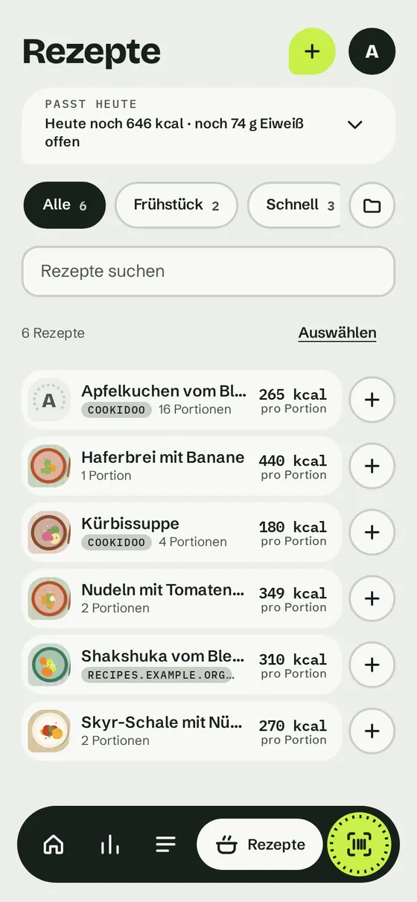
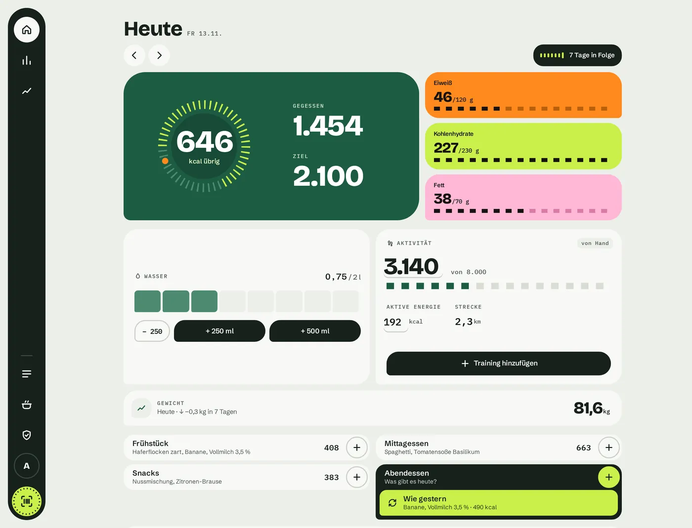
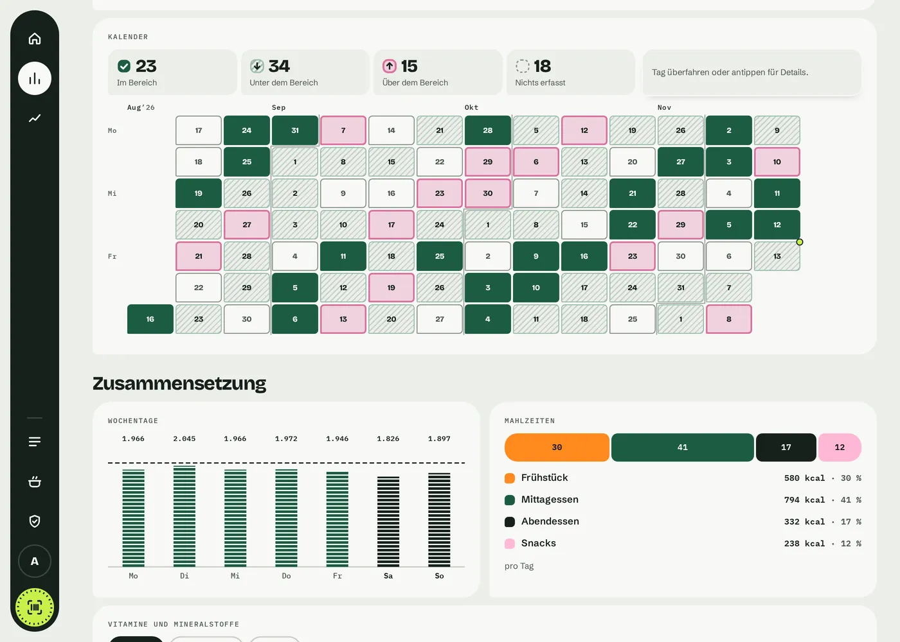
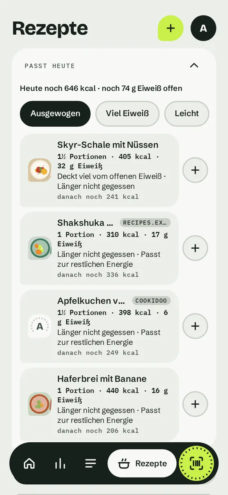
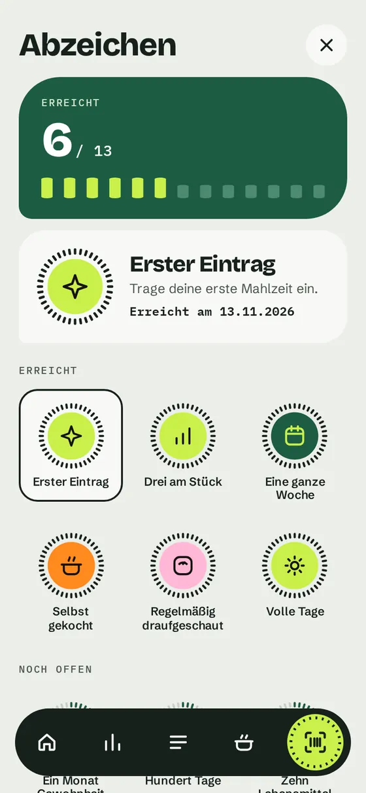
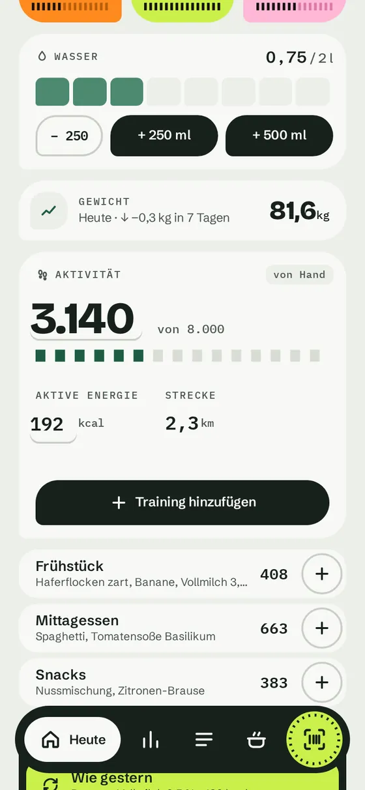

Tagesansicht
Kalorien übrig, Eiweiß, Kohlenhydrate und Fett gegen dein Ziel, vier Mahlzeiten, eine Serie über sieben Tage. Das Überschreiten eines Ziels wird gezeigt, nie getadelt.
Mahlzeiten in Sekunden eintragen. Die Daten bleiben auf deinem Server.
Junges Projekt · Version 0.x · AGPL-3.0
Die Oberfläche
Deutsch und Englisch. Die Bilder zeigen die deutsche Oberfläche mit erfundenen Demo-Daten.









Lieber klicken als ansehen? Die Demo läuft mit der echten Oberfläche in deinem Browser, mit erfundenen Daten. Nichts wird gespeichert, nichts wird irgendwohin gesendet.
Was es kann
Kalorien übrig, Eiweiß, Kohlenhydrate und Fett gegen dein Ziel, vier Mahlzeiten, eine Serie über sieben Tage. Das Überschreiten eines Ziels wird gezeigt, nie getadelt.
Mit der Handykamera im Browser scannen, ohne App-Store. Die Menge ist mit der Portion oder deiner letzten Menge vorbelegt. Oder suchen, oder aus dem zuletzt Gegessenen wählen.
Produkt fehlt oder stimmt nicht? Fotografiere die Nährwerttabelle. Der Server liest sie mit lokaler Texterkennung auf der CPU, nichts verlässt deine Maschine, und du bestätigst vor dem Speichern.
Verpackte Produkte per Name finden, offline und sofort, aus einem optionalen lokalen Katalog aus dem Open-Food-Facts-Export, dazu Grundnahrungsmittel aus dem BLS, den du selbst importierst.
Bis zu zehn Jahre in Tagen, Wochen oder Monaten, Vergleich mit dem Zeitraum davor, Nährstoffkurven nebeneinander, Kalender-Heatmap, Lebensmitteltabelle und eine grobe Schätzung des echten Energieverbrauchs. Zahlen, keine Beratung.
Schritte, aktive Energie und Workouts von Hand, aus dem Yazio-Export oder aus Apple Health per Kurzbefehl. Wahlweise zum Kalorienziel addiert.
Zutaten zu eigenen Rezepten mit Portionen verbinden, ein Foto dazulegen, Rezepte in Gruppen sortieren und danach filtern. Die Mahlzeit von gestern mit einem Tipp kopieren, oft Gegessenes als Vorlage speichern.
Optional und standardmäßig aus: Rezepte aus Cookidoo (Wochenplan, Sammlungen oder ein Link) oder von jeder Rezeptseite, die ihre Nährwerte veröffentlicht, übernehmen, mit den Werten pro Portion.
Rezepte, die zum Rest deines Tages passen, aus deinem Ziel, dem Gegessenen und dem Zeitpunkt, an dem du ein Rezept zuletzt gegessen hast, mit Menge und Begründung in Worten. Auf deinem Server berechnet; abschaltbar.
Abzeichen für Gewohnheiten, ein ruhiger Wochenrückblick mit einer Stärke und höchstens einer Idee. Weniger essen oder Abnehmen wird nie belohnt, und jede Person kann es abschalten.
Eine Glas-Strich-Skala mit Schnelltasten für Wasser. Ein optionaler Fasten-Timer, standardmäßig aus und nie belohnt.
Persönliche Zugangsschlüssel für Skripte und Kurzbefehle und signierte Webhooks an Adressen, die du einträgst. Beides gilt pro Person; ein Admin kann es abschalten.
Datenschutz
Das Tagebuch liegt in einer SQLite-Datenbank auf deiner eigenen Maschine. Die Oberfläche lädt kein CDN, keine Schriften und keine Skripte von Dritten. Etikettfotos werden lokal gelesen. Nur das hier verlässt deinen Server:
Eigene Rezeptfotos und „Was heute noch passt“ senden nirgendwohin etwas. Die vollständige Liste steht in der README (englisch) unter What leaves your server.
Schnellstart
# Repository holen, dann:
git clone https://github.com/mbrockeu/mahlwerk.git && cd mahlwerk
cp .env.example .env # MAHLWERK_CONTACT auf die eigene Adresse setzen
docker compose up -dDanach http://localhost:8110 öffnen und auf der Einrichtungsseite das erste Admin-Konto anlegen. Die Datenbank liegt im Volume mahlwerk-data. Den optionalen Etikettleser und den Cookidoo-Anschluss baust du bei Bedarf ein, siehe README (englisch).
Von anderen Geräten erreichen. Die Compose-Datei startet Mahlwerk mit eigenen Konten und veröffentlicht den Port nur auf 127.0.0.1. Setze einen Reverse-Proxy mit HTTPS davor, statt den Port zu öffnen.
Anmeldung
single für ein privates Netz, proxy hinter deinem eigenen Login-Proxy, local mit eingebauten Konten (Passwörter als scrypt gespeichert) oder oidc mit OpenID Connect (Authelia, Keycloak, Authentik, Pocket ID, …). Bei mehreren Personen sieht jede nur ihr eigenes Tagebuch, ihre Ziele und ihr Gewicht; die Produktliste ist gemeinsam.
Ehrlicher Stand
Der Code wird mit Claude (Anthropic) geschrieben. Gestaltungsentscheidungen, Prüfung und Verantwortung liegen beim Maintainer.